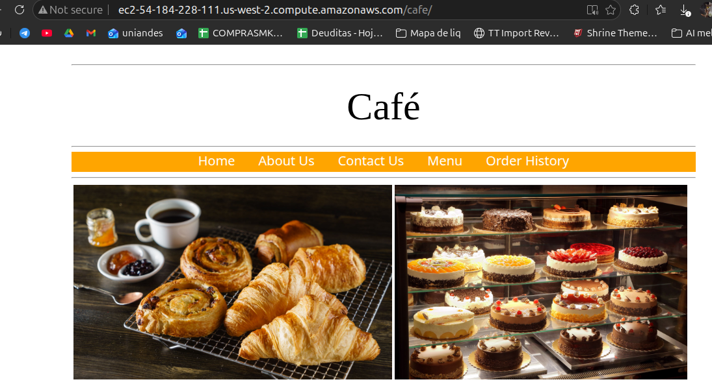

Right-size the café application after the RDS migration: uninstall the orphaned local MariaDB,
downsize the EC2 instance from t3.small to t3.micro via the AWS CLI,
and quantify the saving with the AWS Pricing Calculator.
Lab Summary
The previous lab (179) moved the café database off the web instance and into Amazon RDS. That
left CafeInstance with a stopped MariaDB service it no longer
needs and a t3.small profile that's bigger than the workload now justifies. The
job here is to clean both up: uninstall the package and downsize the instance from the
CLI Host, then prove the saving with the AWS Pricing Calculator.
What changed
MariaDB server plus six dependencies removed from CafeInstance
(137 MB reclaimed). The instance was stopped, switched from
t3.small to t3.micro with modify-instance-attribute,
and started back up. The app keeps serving from a new public endpoint.
What didn't change
The application code, the security group, the role attached to the instance, the EBS
volume, the Amazon RDS database. Right-sizing in this lab is a pure
compute and storage exercise — no application impact, no data movement.
Evidence coverage. Four screenshots: yum remove output,
the café homepage on the new endpoint, and the two Pricing Calculator estimates (before /
after). The CLI flow for the resize itself wasn't captured — the commands appear here
verbatim and the post-resize DNS (ec2-54-184-228-111.us-west-2.compute.amazonaws.com)
is the textual proof that the restart happened.
Topology: before vs. after
Same VPC, same SG, same role. Two things move: the local MariaDB package is gone, and the
instance type drops one tier. The RDS database (from lab 179) keeps serving the data.
Component
Before optimization
After optimization
EC2 instance type
t3.small · 2 vCPU · 2 GiB RAM
t3.micro · 2 vCPU · 1 GiB RAM
Web tier
Apache + PHP serving the café app
Unchanged
Local database
MariaDB 10.2.38 installed, service stopped after the RDS cutover
The lab guide ships before and after topology diagrams as Vocareum-hosted
images that aren't part of the local source — the table above captures the same delta in text.
Walkthrough
Four tasks. The CLI Host acts as the operations bastion — every aws ec2 call
targets CafeInstance by tag, not by hard-coded ID.
01
Connect to both hosts and configure the CLI
Connected via SSH to CafeInstance (the web tier) and to the
CLI Host (the operator bastion) using the lab's
labsuser.pem private key. The key was first locked down with
chmod 400 — required for SSH to accept it.
On the CLI Host, ran aws configure with the lab credentials, the
region read from the instance metadata service (IMDS), and JSON
output. IMDS is the right answer for "what region am I in?" — it doesn't require
AWS credentials and works from inside the EC2:
# Discover the region from inside the EC2 (no credentials needed)
curl http://169.254.169.254/latest/dynamic/instance-identity/document | grep region
# Then configure the AWS CLI with the lab keys + that region
aws configure
# AWS Access Key ID: <AccessKey from lab credentials>
# AWS Secret Access Key: <SecretKey from lab credentials>
# Default region name: us-west-2
# Default output format: json
No screenshot — trivial SSH + wizard interaction; the next tasks exercise the result.
02
Uninstall the decommissioned MariaDB server
The local MariaDB was already stopped after the RDS migration, but the package was
still installed and pulling ~137 MB of disk and a chunk of memory at boot. Stopped
the service to be safe, then removed the package with -y to skip
interactive prompts. yum resolved six dependencies and dropped them in
the same transaction.
# On CafeInstance — make sure nothing is using the local DB
sudo systemctl stop mariadb
# Remove the package; yum pulls 6 dependencies with it
sudo yum -y remove mariadb-server
The transaction summary shows the six co-removed packages, the total 137 MB
reclaimed, and the standard yum lifecycle (Erasing →
Verifying → Complete!):
Why uninstall instead of just stopping the service. A stopped service
still consumes EBS storage for its binaries, config, and (if untouched) data files.
Removing the package shrinks the on-disk footprint and eliminates any chance of
someone accidentally restarting it — which on a hardened image is the better default.
03
Downsize the instance from t3.small to t3.micro (CLI)
Driven entirely from the CLI Host. Four aws ec2 calls do the work, but
the order is non-negotiable: describe → stop → modify → start → poll.
modify-instance-attribute rejects the change unless the instance state is
stopped.
3.1 — Find the instance by tag
Filtering by tag:Name=CafeInstance instead of hard-coding the ID makes
the script portable across lab sessions, since the instance ID changes every time
the environment is recreated.
The --instance-type argument takes the structured form
{"Value":"t3.micro"} — this is the only field on
modify-instance-attribute that uses that shape, a quirk of the underlying
API. stop-instances returns immediately but the state transition
(running → stopping → stopped) takes ~30–60 seconds.
# Stop the instance — required before changing the type
aws ec2 stop-instances --instance-ids <CafeInstance-ID>
# Wait until State.Name == "stopped" (poll describe-instances or use the waiter)
aws ec2 wait instance-stopped --instance-ids <CafeInstance-ID>
# Swap the instance type
aws ec2 modify-instance-attribute \
--instance-id <CafeInstance-ID> \
--instance-type "{\"Value\": \"t3.micro\"}"
# Bring it back up
aws ec2 start-instances --instance-ids <CafeInstance-ID>
3.3 — Verify the new type and the new endpoint
Polled describe-instances with a tight --query projection.
The four fields that matter post-restart are the type (must be t3.micro),
the new public DNS, the new public IP, and the state (running).
Gotcha — public DNS and IP change on restart. Stopping and starting an
EC2 instance releases the public IPv4 lease; the next start gets a fresh address (and
therefore a fresh public DNS). The pre-resize endpoint stops working. If the workload
needed a stable address, this is where you'd attach an Elastic IP.
In this lab the app is accessed by whatever public DNS the instance currently has, so
the new endpoint is just what you use next.
Hit http://ec2-54-184-228-111.us-west-2.compute.amazonaws.com/cafe/ in
a browser — the café homepage rendered cleanly, the navbar (Home / About Us /
Contact Us / Menu / Order History) was intact, and the catalog photos loaded.
t3.micro is enough for this workload now that MariaDB isn't co-located.

Café app served from the downsized t3.micro instance — URL bar shows the new public DNS, navbar and assets render normally.
Pricing Calculator: quantify the saving
Built two estimates in the AWS Pricing Calculator with identical assumptions (US West /
Oregon, on-demand Linux, shared tenancy, 100% utilization), differing only on EC2 instance
class and EBS size. Both estimates include the RDS line from lab 179, which stays constant.
Numbers note. The lab guide quotes $35.50 → $25.18, savings $10.42.
The actual estimates produced during the lab (the screenshots above) show
$33.89 → $24.30, savings $9.59. The discrepancy is AWS pricing drift between
when the guide was written and when the lab was run — the captured numbers are the real
ones and are the figures used throughout this report.
What the saving actually represents. Half the EC2 line collapses because
t3.micro has half the on-demand hourly rate of t3.small, and the
EBS volume gets halved from 40 GB to 20 GB now that the local DB is gone. The RDS line is
the floor — fully managed databases don't tier down at this scale.
Key Learnings
Concepts that stuck
✓
Right-sizing is a cleanup activity, not a capacity activity. The trigger here was an architectural change (DB moved to RDS), not a sustained metric drop.
✓
modify-instance-attribute --instance-type requires the instance to be stopped. Running it on a live instance returns an IncorrectInstanceState error.
✓
Stop/start releases the public IP. Anything depending on a fixed address needs an Elastic IP — not a feature of this lab, but the natural follow-up.
✓
The IMDS endpoint at 169.254.169.254 is the canonical way to find the region from inside an EC2 — no AWS credentials required.
✓
The Pricing Calculator is a before/after comparison tool, not a billing oracle — its job is to justify the change to whoever signs off, not to predict the invoice to the cent.
✓
Filtering EC2 commands by tag:Name instead of instance ID makes the operations portable across lab refreshes.
Conclusion
The technical work was small — one yum remove, one stop/modify/start
sequence. The lesson sits underneath that: every architectural change leaves a tail of
orphaned resources (a package nobody uses, an instance class nobody
needs anymore), and cost optimization is the discipline of going back and trimming
that tail.
At the scale of this café app the saving is ~$9.59 per
month. At fleet scale the same pattern — uninstall what isn't running, downsize
what's overprovisioned — is where the meaningful FinOps numbers come from. The Pricing
Calculator is the artifact that converts a CLI change into a number a stakeholder can
approve.